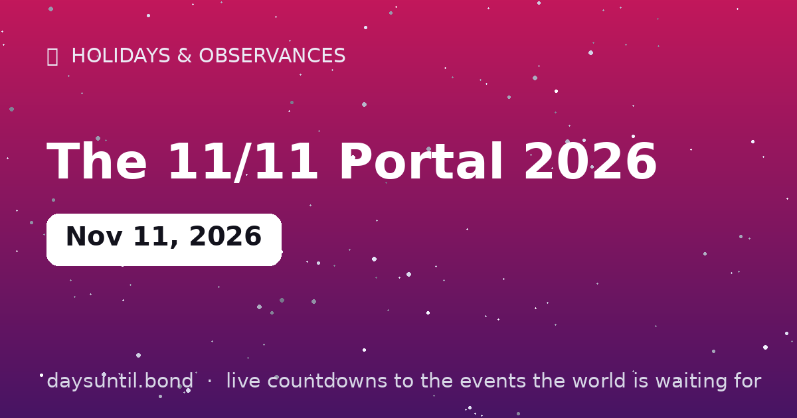

How Many Days Until The 11/11 Portal 2026?
The 11/11 Portal 2026 falls on Wednesday, November 11, 2026.
As of October 24, 2026: 18 days to go — 2 weeks and 4 days, 13 weekdays (5 weekend days), about 432 hours.

Quick facts
| Date | Wednesday, November 11, 2026 |
|---|---|
| Category | Cultural observance |
About The 11/11 Portal 2026
The 11/11 Portal 2026 falls on Wednesday, November 11, 2026. November 11 — 11/11 — is the internet's favorite manifestation day: a numerological 'gateway' beloved by angel-number communities, and in 2026 it opens with both Venus and Mercury retrograde, stationing direct within 48 hours after it. Full analysis on Prophetic's 11/11 portal guide.
The live counter above ticks down to the day in your time zone.
What the 11/11 portal actually is
The 11/11 portal is a numerological observance, not an astronomical one. Nothing happens in the sky on November 11 that does not happen on any other date; what makes the day significant is the notation. In the day/month format used across most of the world, the date reads 11/11, and in numerology eleven is a 'master number' associated with intuition and threshold moments. The 'portal' framing — the idea that the date is a gateway for intentions set on it — grew out of angel-number communities online in the 2010s.
That is worth saying plainly, because the internet is full of claims about energy frequencies and alignments that are simply not true. The honest version is more interesting: the date is a shared focal point, and a shared focal point is a genuinely effective way to make a decision and stick to it.
What is happening astrologically on 11/11 in 2026
This year the symbolism and the astronomy genuinely overlap. On November 11, 2026, both Mercury and Venus are retrograde — and both station direct within about 48 hours of the date: Mercury turns direct on November 13 and Venus on November 14. A station day is the day or two when a planet appears to stand still before changing direction, and in traditional practice that is when its themes are most concentrated.
Two retrograde stations landing inside one 48-hour window, on a date already freighted with meaning, is a rare coincidence. Whatever you make of the interpretation, the practical advice that astrologers give for a station window is unusually concrete: do not sign, launch or announce during the turn, and use the days immediately after it.
November 11 is also three real holidays
Long before it was a portal, 11/11 was a date on the calendar. It is Armistice Day, marking the end of the First World War at 11am on the eleventh day of the eleventh month of 1918, and it is observed as Remembrance Day across the Commonwealth and as Veterans Day in the United States, with two minutes of silence at the eleventh hour.
It is also, by a considerable margin, the biggest shopping day on Earth — China's Singles' Day, or Double 11, chosen in the 1990s for the same reason the numerologists like it: 11/11 is four ones, four singles. Alibaba turned it into a retail event in 2009 and its annual gross merchandise volume now dwarfs Black Friday and Cyber Monday combined.
Three ways people mark the date
| Tradition | What happens | Origin |
|---|---|---|
| Armistice / Remembrance Day | Two minutes' silence at 11am | End of WWI, 11 November 1918 |
| Veterans Day (US) | Ceremonies honouring military service | US federal holiday since 1954 |
| Singles' Day (China) | The world's largest online sale | Alibaba, 2009 — a play on 11/11 = four singles |
How to actually use a date like this
The honest case for a focal date has nothing to do with energy and everything to do with decision architecture. A specific, shared, memorable moment does three useful things that an ordinary Tuesday does not: it prompts you to decide at all, it gives the decision a written form, and it gives you a date to check back on.
That is why the practical version of 11/11 is straightforward. Write the intention down in one sentence, in a form you could recognise as met or unmet. Attach it to a cue — a day, a time, a place, a person — rather than to a feeling. Then set a review date, sixty or ninety days out, and look at it then. None of that requires a portal; it requires a calendar, which is arguably the more useful tool.
Singles' Day: the shopping event on the same date
The same date is the largest retail event on Earth by transaction volume. Singles' Day, or Double 11, began in 1993 as a Nanjing university joke about being single — four ones, four singles — and Alibaba turned it into a 24-hour sale in 2009. Its annual gross merchandise volume now exceeds Black Friday and Cyber Monday combined, and the event has expanded from one day into a multi-week campaign.
It is no longer Alibaba's alone: JD.com, Pinduoduo, Douyin and Xiaohongshu all run competing 11.11 campaigns, and the format has been exported to Southeast Asia through Lazada and Shopee. The date is the same joke, told at industrial scale.
Remembrance: why the silence is at 11am
The eleventh hour of the eleventh day of the eleventh month is not numerology — it is the moment the First World War armistice took effect in 1918. Hostilities ended at 11am Paris time, after more than four years of industrialised war, and the two minutes of silence were adopted across the British Empire within a year at the suggestion of an Australian journalist, Edward George Honey.
The date is Remembrance Day in the Commonwealth, where poppies are worn for the flower that grew over the churned battlefields of Flanders, and Veterans Day in the United States, where it honours all military service rather than only the war dead. Held on the same day as the portal and Singles' Day, it is a useful reminder that the date had a meaning long before anyone started manifesting on it.
Where the 'angel number' idea comes from
The belief that repeated digits carry meaning is much older than the internet, but the modern version — 1111 as a message — was popularised in New Age circles in the late twentieth century, notably through Doreen Virtue's angel-number books from the early 2000s, which assigned a meaning to every repeated sequence. In that system, 1111 is a sign of alignment: thoughts manifesting quickly, so mind what you are thinking.
There is no evidence for any of it, and it is not a claim anyone can test. What is real is the pattern-seeking that makes the date appealing: humans are very good at noticing coincidence and very bad at estimating how often it should happen by chance — which, on a date that appears once a year and reads identically, is more or less the whole phenomenon.